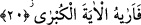
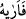

görevine git” diye vahyetti. Rabbimiz sözüne devamla; “gökte on iki bin melek vardır
ki, orada yazılı olanı bilmek istemiş, ancak ona erişememişlerdir” buyurdu.
Görüldüğü üzere âyet-i kerimede “haşyet” yâni Allah korkusu, hidâyetin neticesi ve
bunun hedefi olarak gösterilmektedir. Çünkü korku işin belkemiğidir. Allah’tan korkan
kimseden her türlü iyilik meydana gelir. Korkudan emin olan ise her türlü kötülüğü
işlemeye cür’et eder. Nitekim Peygamber Efendimiz (s.a.) şöyle buyurmuştur: “Korkan
erkenden yola çıkar, erken yola çıkan menzile varır.” [5]
Allah Teâlâ Mûsâ (a.s.)’a, anlamı “teklif” olan soru yöneltme metoduyla Fir’avn’a
hitâb etmesini emrediyor. Bundan maksad yumuşak sözle onu çağırmak ve kibrinden
dönmesi için ona iyi davranmaktır. Bu üslûp, “ona yumuşak söz söyleyin, belki o
aklını başına alır veya korkar” (Taha 20/44) âyet-i kerimesinin bir açıklaması
mâhiyetindedir.
Sözün yumuşak olması gerektiği sebepsiz değildir. Sözün açık bir emir biçiminde
değil, teklif etme formunda olması istenmiştir. Yine bu sözün içinde şirk, cehalet, küfür
gibi tezekki/temizlenme ile ilgili başka kavramlar yoktur. Bilakis bu sözün içinde başka
ayrıntıların olduğu gâyet açıktır.
20. Ve ona en büyük mûcizeyi gösterdi.
“
/Fe erâhu” kelimesindeki “fâ” harfi, fâ-i fasîha olup, başka sûrelerde ayrıntılı bir
şekilde ele alınmış olduğu için burada zikredilmeyen bir takım cümleleri açığa
çıkarmaktadır. Çünkü, Hz. Mûsâ ile Fir’avn arasında bilinen karşılıklı konuşmalar
geçmiş, sonunda Fir’avn Hz. Mûsâ’ya “eğer sen sözünde doğru olduğuna dâir bir
mûcize getirdiysen bunu göster” (el-A’râf 7/106) demiştir. Daha açık ifâde etmek
gerekirse; Hz. Mûsâ Allah’tan emir aldıktan sonra Fir’avn’a gider. Onu tevhid ve itâata
çağırır. Bunun üzerine Fir’avn ondan iddiâsında doğru olduğuna dâir bir mûcize ister.
“Fe erâhu” fiilin masdarı olan “irâet” “gözle göstermek” veya “bildirmek”
anlamınadır. Çünkü lânetli Fir’avn mûcizeyi görünce onun gerçek olduğunu bilmiş,
ancak bunun sihir olduğunu iddiâ etmiştir.
Fir’avn’a gösterilen bu en büyük mûcize, Hz. Mûsâ tarafından ortaya konan bir kuvvet
izharı idi. Bu mûcizenin Hz. Mûsâ’ya nisbet edilmesi, zâhirî bir nisbettir. Nitekim,
“Andolsun Biz ona (Fir’avn’a) bütün (bu) delillerimizi gösterdik” (Taha 20/56)
âyet-i kerimesinde “biz” anlamına gelen “na” harfinin Allah Teâlâ’ya nisbeti ise zâhirî
değil de hakîkî bir nisbettir.
“En büyük mûcize” ifâdesiyle kasdedilen, asânın yılana çevrilmesidir. Küçük
mûcizeler ise bunun dışındaki diğer mûcizelerdir. Asânın yılana döndürülmesi tüm
mûcizelerin önünde gelir. Şu halde “fa-i tâ’kîbiyye”nin gereği olarak “en büyük